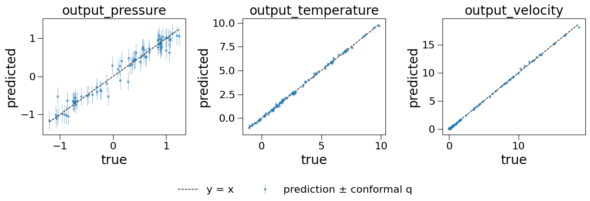
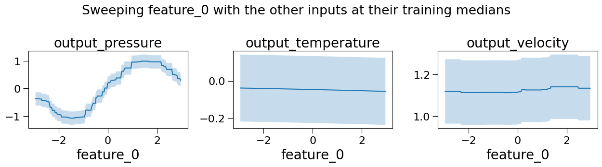

Using the Best Model from the Grid Search App¶
What this tutorial covers:
The grid-search app (Grid_Search_Surrogate_Models.py) tries every candidate surrogate on each output and reports the winners as a Best Model Configuration such as
[{"model": "ard_gp", "alpha": 1e-06}, {"model": "ard_gp", "alpha": 1e-06}, ...]
That list says which models won. It is not a model you can call. To get one, use the Export the Model section under the results, which has two downloads:
File |
What it is |
Use it to |
|---|---|---|
|
The fitted model as a scikit-learn |
Predict on new data straight away |
|
A description of the run: columns, preprocessing, winning model and hyperparameters per output, conformal quantiles, package versions |
Read what was chosen, or rebuild and refit the model on new data |
This notebook covers both files:
Getting the files
Loading the model
What is inside the pipeline
Predicting on new data
Uncertainty: model std and conformal intervals
Rows with missing inputs
A what-if sweep
Rebuilding the model from the JSON config
Things to know before sharing the file
[1]:
import warnings
warnings.filterwarnings("ignore")
import lightgbm # import before sklearn's OpenMP users on macOS
import json
import logging
from importlib.metadata import version
from pathlib import Path
import joblib
import matplotlib.pyplot as plt
import numpy as np
import pandas as pd
from sklearn.model_selection import ParameterGrid, train_test_split
import multioutreg
from multioutreg.conformal.base import BaseConformalPredictor
from multioutreg.gui.grid_search_core import (
build_model_bundle,
build_model_pipeline,
default_surrogate_defs,
select_per_target,
serialize_model_bundle,
)
from multioutreg.utils.imputation import drop_unusable_rows, impute_train_test
_quiet = logging.getLogger("lightgbm_quiet")
_quiet.setLevel(logging.ERROR)
lightgbm.register_logger(_quiet) # LightGBM logs every fit during the grid search
pd.set_option("display.precision", 3)
## 1. Getting the Files
From the app. Start it with
streamlit run multioutreg/gui/Grid_Search_Surrogate_Models.py
then:
Upload a CSV, or click Try with sample data. This notebook uses the same sample: 300 rows, five inputs
feature_0tofeature_4, and three outputs (output_pressure,output_temperature,output_velocity).Under ⚙️ Advanced Settings, tick Compute conformal prediction intervals (alpha 0.1) and Skip computationally expensive models. Neither is required, but this notebook uses both.
Click Run Grid Search. When it finishes, scroll to Export the Model and click Download Trained Model (.joblib) and Download Model Config (.json).
Without the app. So that this notebook runs on its own, the next cell makes the same two files in code. It repeats the app’s steps in the app’s order, with the app’s split sizes and seeds. If you downloaded the files from the app, put them next to this notebook and skip the next cell.
[2]:
DATA = Path(multioutreg.__file__).parent / "gui" / "data" / "example_dataset_3_outputs.csv"
MODEL_FILE = Path("multioutreg_grid_search_model.joblib")
CONFIG_FILE = Path("multioutreg_grid_search_config.json")
EXPENSIVE = {"gpr", "ngb", "cpn", "ard_gp", "gpx", "kpls", "sgpr"}
def make_app_download(df, input_cols, output_cols, conformal_alpha=0.1, skip_expensive=True):
# Same order as the app: drop rows missing a target, split, impute, (PCA),
# hold out a calibration split, select per output, then calibrate.
df = drop_unusable_rows(df, output_cols, [])
X_train, X_test, y_train, y_test = train_test_split(
df[input_cols].values, df[output_cols].values, test_size=0.25, random_state=0)
X_train, X_test, imputer = impute_train_test(X_train, X_test, return_imputer=True)
X_train, X_cal, y_train, y_cal = train_test_split(
X_train, y_train, test_size=0.2, random_state=0)
defs = [d for d in default_surrogate_defs() if not (skip_expensive and d[0] in EXPENSIVE)]
result = select_per_target(defs, X_train, y_train)
residuals = np.abs(y_cal - result.model.predict(X_cal))
q = np.array([BaseConformalPredictor._conformal_quantile(r, conformal_alpha)
for r in residuals.T])
bundle = build_model_bundle(
build_model_pipeline(result.model, input_cols, imputer),
input_cols, output_cols, result.combo,
conformal_alpha=conformal_alpha, conformal_quantiles=q,
data_split={"test_size": 0.25, "random_state": 0,
"calibration_fraction": 0.2, "validation_fraction": 0.2},
)
MODEL_FILE.write_bytes(serialize_model_bundle(bundle))
CONFIG_FILE.write_text(json.dumps(bundle["config"], indent=2))
sample = pd.read_csv(DATA)
INPUTS = [c for c in sample.columns if c.startswith("feature_")]
OUTPUTS = [c for c in sample.columns if c.startswith("output_")]
if not MODEL_FILE.exists():
make_app_download(sample, INPUTS, OUTPUTS)
print(f"{MODEL_FILE}: {MODEL_FILE.stat().st_size / 1e6:.2f} MB")
print(f"{CONFIG_FILE}: {CONFIG_FILE.stat().st_size / 1e3:.1f} kB")
multioutreg_grid_search_model.joblib: 0.40 MB
multioutreg_grid_search_config.json: 1.1 kB
## 2. Loading the Model
The .joblib file holds a plain dictionary. joblib.load needs multioutreg to be installed, because the pipeline contains multioutreg classes.
Only load ``.joblib`` files you made yourself or got from someone you trust. Loading one is unpickling it, and a pickle can run arbitrary code.
[3]:
bundle = joblib.load(MODEL_FILE)
sorted(bundle)
[3]:
['config',
'conformal',
'input_columns',
'output_columns',
'pipeline',
'versions']
Key |
Contents |
|---|---|
|
The fitted |
|
Column names in training order. Predictions come back in |
|
|
|
The same dictionary as the |
|
Python and package versions the model was trained with |
A pickled scikit-learn model is only guaranteed to load and behave the same under the versions it was saved with. Compare them before trusting the predictions:
[4]:
installed = {"multioutreg": version("multioutreg"), "scikit-learn": version("scikit-learn"),
"numpy": version("numpy"), "joblib": version("joblib")}
pd.DataFrame({"saved with": {k: bundle["versions"].get(k) for k in installed},
"installed": installed})
[4]:
| saved with | installed | |
|---|---|---|
| multioutreg | 0.0.1 | 0.0.1 |
| scikit-learn | 1.9.1 | 1.9.1 |
| numpy | 1.26.4 | 1.26.4 |
| joblib | 1.5.3 | 1.5.3 |
## 3. What Is Inside the Pipeline
The pipeline puts new rows through the same steps, in the same order, as the app put the training rows through:
[5]:
pipe = bundle["pipeline"]
pipe
[5]:
Pipeline(steps=[('columns',
InputColumnSelector(columns=['feature_0', 'feature_1',
'feature_2', 'feature_3',
'feature_4'])),
('imputer', KNNImputer(keep_empty_features=True)),
('model',
PerTargetRegressorWithStd(estimators=[XGBRegressor(base_score=None,
booster=None,
callbacks=None,
colsample_bylevel=None,
colsample_bynode=None,
colsample_bytree=None,
device=None...
interaction_constraints=None,
learning_rate=0.05,
max_bin=None,
max_cat_threshold=None,
max_cat_to_onehot=None,
max_delta_step=None,
max_depth=4,
max_leaves=None,
min_child_weight=None,
missing=nan,
monotone_constraints=None,
multi_strategy=None,
n_estimators=200,
n_jobs=None,
num_parallel_tree=None, ...),
_PBREstimator(),
ExtraTreesWithUncertainty(n_estimators=50)]))])In a Jupyter environment, please rerun this cell to show the HTML representation or trust the notebook. On GitHub, the HTML representation is unable to render, please try loading this page with nbviewer.org.
Parameters
Parameters
| columns | ['feature_0', 'feature_1', ...] |
Fitted attributes
| Name | Type | Value |
|---|---|---|
| columns_ | list | ['fe..._0', 'fe..._1', 'fe..._2', 'fe..._3', ...] |
Parameters
Fitted attributes
5 features
| x0 |
| x1 |
| x2 |
| x3 |
| x4 |
Parameters
| estimators | [XGBRegressor(...ree=None, ...), _PBREstimator(), ...] |
Fitted attributes
| Name | Type | Value |
|---|---|---|
| estimators_ | list | [XGBRegressor(...ree=None, ...), _PBREstimator(), ExtraTreesWit...estimators=50)] |
Step |
What it does |
|---|---|
|
Picks |
|
The |
|
Only present if Apply PCA to input features was ticked: the fitted |
|
The selected model for each output, refitted on the full training split |
All steps are already fitted. Do not call ``pipe.fit``: that would retrain everything on whatever data you pass it.
The models chosen for each output are in pipe.named_steps["model"].estimators_, in output_columns order. Some come wrapped in their own scaler pipeline, because distance- and kernel-based models need standardised inputs.
[6]:
models = pipe.named_steps["model"].estimators_
pd.DataFrame({
"output": bundle["output_columns"],
"selected": [cfg["model"] for cfg in bundle["config"]["models"]],
"estimator": [type(m).__name__ if not hasattr(m, "steps")
else " → ".join(type(s).__name__ for _, s in m.steps) for m in models],
"hyperparameters": [{k: v for k, v in cfg.items() if k != "model"}
for cfg in bundle["config"]["models"]],
})
[6]:
| output | selected | estimator | hyperparameters | |
|---|---|---|---|---|
| 0 | output_pressure | xgb | XGBRegressor | {'learning_rate': 0.05, 'max_depth': 4, 'n_est... |
| 1 | output_temperature | pbr | _PBREstimator | {'degree': 2, 'interaction_only': False} |
| 2 | output_velocity | et | ExtraTreesWithUncertainty | {'max_depth': None, 'n_estimators': 50} |
The JSON config has the same information in a form you can read, diff or store with an experiment log:
[7]:
config = json.loads(CONFIG_FILE.read_text())
print(json.dumps({k: config[k] for k in ("input_columns", "output_columns",
"preprocessing", "conformal", "data_split")}, indent=2))
{
"input_columns": [
"feature_0",
"feature_1",
"feature_2",
"feature_3",
"feature_4"
],
"output_columns": [
"output_pressure",
"output_temperature",
"output_velocity"
],
"preprocessing": {
"imputer": {
"type": "KNNImputer",
"n_neighbors": 5
},
"pca": null
},
"conformal": {
"alpha": 0.1,
"quantiles": {
"output_pressure": 0.2397258854058052,
"output_temperature": 0.1799988240208874,
"output_velocity": 0.15328330499408338
}
},
"data_split": {
"test_size": 0.25,
"random_state": 0,
"calibration_fraction": 0.2,
"validation_fraction": 0.2
}
}
## 4. Predicting on New Data
Pass a DataFrame with the input columns. Here the “new data” is the 25% of the sample the app held out as its test set. The model never saw these rows, and we know their true outputs, so we can check the predictions. To show that the columns step matches by name, the columns are shuffled and an unrelated batch_id column is added.
[8]:
_, new_rows = train_test_split(sample, test_size=0.25, random_state=0)
new_inputs = new_rows[INPUTS[::-1]].assign(batch_id="B-17")
new_inputs.head()
[8]:
| feature_4 | feature_3 | feature_2 | feature_1 | feature_0 | batch_id | |
|---|---|---|---|---|---|---|
| 208 | 2.316 | 0.755 | -1.087 | 1.744 | 0.237 | B-17 |
| 188 | -1.761 | 1.978 | 0.909 | 0.325 | -1.356 | B-17 |
| 12 | -1.314 | -0.859 | 1.972 | -1.372 | -0.668 | B-17 |
| 221 | -2.077 | 1.176 | 1.549 | -0.623 | -1.957 | B-17 |
| 239 | -2.219 | 1.498 | 2.813 | 2.841 | 2.229 | B-17 |
[9]:
pred = pd.DataFrame(pipe.predict(new_inputs), columns=bundle["output_columns"],
index=new_inputs.index)
pred.head()
[9]:
| output_pressure | output_temperature | output_velocity | |
|---|---|---|---|
| 208 | 0.421 | 0.809 | 0.108 |
| 188 | -1.005 | -0.129 | 5.727 |
| 12 | -0.669 | 4.328 | 3.757 |
| 221 | -1.032 | 1.846 | 8.051 |
| 239 | 1.027 | 7.143 | 9.175 |
The predictions should give the same test-set metrics the app reported in its Metrics Table:
[10]:
from sklearn.metrics import mean_absolute_error, r2_score, root_mean_squared_error
pd.DataFrame({
name: {"r2": r2_score(new_rows[name], pred[name]),
"rmse": root_mean_squared_error(new_rows[name], pred[name]),
"mae": mean_absolute_error(new_rows[name], pred[name])}
for name in bundle["output_columns"]
}).T
[10]:
| r2 | rmse | mae | |
|---|---|---|---|
| output_pressure | 0.953 | 0.157 | 0.116 |
| output_temperature | 0.998 | 0.110 | 0.091 |
| output_velocity | 0.999 | 0.126 | 0.071 |
## 5. Uncertainty: Model Std and Conformal Intervals
Model standard deviation. predict(X, return_std=True) is passed through to each output’s model and returns (mean, std). Not every model has an uncertainty estimate. Where a model has none, its column of std is NaN:
[11]:
mean, std = pipe.predict(new_inputs, return_std=True)
std = pd.DataFrame(std, columns=bundle["output_columns"], index=new_inputs.index)
std.describe().loc[["count", "mean", "min", "max"]]
[11]:
| output_pressure | output_temperature | output_velocity | |
|---|---|---|---|
| count | 0.0 | 75.000 | 75.000 |
| mean | NaN | 0.106 | 0.291 |
| min | NaN | 0.101 | 0.020 |
| max | NaN | 0.116 | 1.505 |
Conformal intervals. If the run computed conformal intervals, the bundle stores one quantile q per output. The interval for a prediction is [pred - q, pred + q]. It is the same width for every row, and it works whichever model won.
It was calibrated on rows the model never trained on. With alpha = 0.1, about 90% of new rows should fall inside it, provided the new rows come from the same distribution as the training data.
[12]:
q = pd.Series(bundle["conformal"]["quantiles"])
lower, upper = pred - q, pred + q
covered = (new_rows[q.index] >= lower) & (new_rows[q.index] <= upper)
pd.DataFrame({"half-width q": q, "coverage on new rows": covered.mean(),
"target": 1 - bundle["conformal"]["alpha"]})
[12]:
| half-width q | coverage on new rows | target | |
|---|---|---|---|
| output_pressure | 0.240 | 0.907 | 0.9 |
| output_temperature | 0.180 | 0.907 | 0.9 |
| output_velocity | 0.153 | 0.933 | 0.9 |
[13]:
fig, axes = plt.subplots(1, 3, figsize=(13, 4))
for ax, name in zip(axes, bundle["output_columns"]):
ax.errorbar(new_rows[name], pred[name], yerr=q[name], fmt="o", ms=3, alpha=0.5,
elinewidth=0.8, label=f"prediction ± conformal q")
lims = [min(new_rows[name].min(), pred[name].min()), max(new_rows[name].max(), pred[name].max())]
ax.plot(lims, lims, "k--", lw=1, label="y = x")
ax.set(title=name, xlabel="true", ylabel="predicted")
fig.tight_layout()
fig.legend(*axes[0].get_legend_handles_labels(), loc="upper center", ncol=2,
bbox_to_anchor=(0.5, 0.0), frameon=False)
[13]:
<matplotlib.legend.Legend at 0x13495b530>

## 6. Rows with Missing Inputs
The imputer step lets the pipeline take rows with empty input cells, even if the training data had none. Here three of the new rows lose one value each:
[14]:
gappy = new_rows[INPUTS].head(3).copy()
gappy.iloc[0, 1] = np.nan
gappy.iloc[1, 3] = np.nan
gappy.iloc[2, 4] = np.nan
upto_imputer = pipe[: [name for name, _ in pipe.steps].index("imputer") + 1]
filled = pd.DataFrame(upto_imputer.transform(gappy), columns=INPUTS, index=gappy.index)
pd.DataFrame([
{"row": i, "column": col, "filled in": filled.loc[i, col], "true value": new_rows.loc[i, col]}
for i, col in gappy.isna().stack().loc[lambda s: s].index
])
[14]:
| row | column | filled in | true value | |
|---|---|---|---|---|
| 0 | 208 | feature_1 | 0.334 | 1.744 |
| 1 | 188 | feature_3 | -1.715 | 1.978 |
| 2 | 12 | feature_4 | -0.793 | -1.314 |
[15]:
pd.DataFrame({
"complete row": pipe.predict(new_rows[INPUTS].head(3))[:, 0],
"row with a gap": pipe.predict(gappy)[:, 0],
}, index=gappy.index).rename_axis(f"{OUTPUTS[0]} prediction")
[15]:
| complete row | row with a gap | |
|---|---|---|
| output_pressure prediction | ||
| 208 | 0.421 | 0.341 |
| 188 | -1.005 | -1.046 |
| 12 | -0.669 | -0.667 |
upto_imputer is a slice of the pipeline: the steps up to and including imputer. Slicing a pipeline like this is how you look at what any intermediate step does.
A filled-in value is an estimate. Its quality depends on how well the other inputs predict the missing one. In this sample the five inputs were drawn independently, so the neighbours carry little information and the filled values are rough. Treat predictions for rows with gaps as less reliable than predictions for complete rows. The conformal intervals were calibrated on complete rows only.
## 7. A What-If Sweep
A surrogate is cheap to call, so you can explore it. Below, feature_0 is swept across its training range while the other inputs are held at their training medians, and each output is plotted with its conformal band. Stay inside the training range: predictions outside it are extrapolation, and the intervals no longer apply.
[16]:
grid = pd.DataFrame({c: np.full(200, sample[c].median()) for c in INPUTS})
grid["feature_0"] = np.linspace(sample["feature_0"].min(), sample["feature_0"].max(), 200)
sweep = pd.DataFrame(pipe.predict(grid), columns=bundle["output_columns"])
fig, axes = plt.subplots(1, 3, figsize=(13, 3.6))
for ax, name in zip(axes, bundle["output_columns"]):
ax.plot(grid["feature_0"], sweep[name])
ax.fill_between(grid["feature_0"], sweep[name] - q[name], sweep[name] + q[name], alpha=0.25)
ax.set(title=name, xlabel="feature_0")
fig.suptitle("Sweeping feature_0 with the other inputs at their training medians")
fig.tight_layout()

Only output_pressure responds to feature_0. The other two outputs stay flat, which tells you they depend on the other inputs instead. Sweeping one input at a time like this is a quick way to see what drives each output.
The same pattern works for optimisation. Any optimiser that calls a function of the inputs, such as scipy.optimize.minimize or differential_evolution, can call pipe.predict on a one-row DataFrame.
## 8. Rebuilding the Model from the JSON Config
The .joblib file is the trained model. The .json file is the recipe for it. Use the recipe when:
you have more or newer data and want to refit the winning configuration without rerunning the whole grid search, or
the
.joblibwill not load because your package versions differ from the ones it was saved with.
Each entry in config["models"] names a candidate from default_surrogate_defs() and gives its hyperparameters. Some values are not JSON: a GP kernel is stored as its repr, and a tuple becomes a list. So each value is matched against the candidate’s grid instead of being passed in as is:
[17]:
def _as_json(value):
return json.loads(json.dumps(value, default=repr))
def estimator_from_config(entry):
# Return an unfitted estimator for one entry of config["models"].
defs = {name: (factory, grid) for name, factory, grid in default_surrogate_defs()}
factory, grid = defs[entry["model"]]
wanted = {k: v for k, v in entry.items() if k != "model"}
for params in ParameterGrid(grid):
if _as_json(params) == wanted:
return factory(**params)
raise ValueError(f"{entry} is not in the grid of {entry['model']!r}")
def pipeline_from_config(config):
# Unfitted pipeline with the same steps as the exported one.
from sklearn.decomposition import PCA
from sklearn.impute import KNNImputer
from sklearn.pipeline import Pipeline, make_pipeline
from sklearn.preprocessing import StandardScaler
from multioutreg.gui.grid_search_core import InputColumnSelector, PerTargetRegressorWithStd
steps = [("columns", InputColumnSelector(config["input_columns"]))]
imp = config["preprocessing"]["imputer"]
if imp is not None:
steps.append(("imputer", KNNImputer(n_neighbors=imp["n_neighbors"],
keep_empty_features=True)))
pca = config["preprocessing"]["pca"]
if pca is not None:
steps.append(("pca", make_pipeline(StandardScaler(), PCA(n_components=pca["n_components"]))))
steps.append(("model", PerTargetRegressorWithStd(
[estimator_from_config(e) for e in config["models"]])))
return Pipeline(steps)
rebuilt = pipeline_from_config(config)
rebuilt
[17]:
Pipeline(steps=[('columns',
InputColumnSelector(columns=['feature_0', 'feature_1',
'feature_2', 'feature_3',
'feature_4'])),
('imputer', KNNImputer(keep_empty_features=True)),
('model',
PerTargetRegressorWithStd(estimators=[XGBRegressor(base_score=None,
booster=None,
callbacks=None,
colsample_bylevel=None,
colsample_bynode=None,
colsample_bytree=None,
device=None...
interaction_constraints=None,
learning_rate=0.05,
max_bin=None,
max_cat_threshold=None,
max_cat_to_onehot=None,
max_delta_step=None,
max_depth=4,
max_leaves=None,
min_child_weight=None,
missing=nan,
monotone_constraints=None,
multi_strategy=None,
n_estimators=200,
n_jobs=None,
num_parallel_tree=None, ...),
_PBREstimator(),
ExtraTreesWithUncertainty(n_estimators=50)]))])In a Jupyter environment, please rerun this cell to show the HTML representation or trust the notebook. On GitHub, the HTML representation is unable to render, please try loading this page with nbviewer.org.
Parameters
Parameters
| columns | ['feature_0', 'feature_1', ...] |
Parameters
Parameters
| estimators | [XGBRegressor(...ree=None, ...), _PBREstimator(), ...] |
Fit it on the same rows the app trained on, and compare with the exported model:
[18]:
train_rows, _ = train_test_split(sample, test_size=0.25, random_state=0)
train_rows, _ = train_test_split(train_rows, test_size=config["data_split"]["calibration_fraction"],
random_state=0)
rebuilt.fit(train_rows, train_rows[config["output_columns"]].values)
refit_pred = rebuilt.predict(new_inputs)
diff = np.abs(pred.values - refit_pred)
pd.DataFrame({"model": [m["model"] for m in config["models"]],
"mean |exported - rebuilt|": diff.mean(axis=0),
"max |exported - rebuilt|": diff.max(axis=0),
"std of the output": new_rows[config["output_columns"]].std().values},
index=config["output_columns"])
[18]:
| model | mean |exported - rebuilt| | max |exported - rebuilt| | std of the output | |
|---|---|---|---|---|
| output_pressure | xgb | 0.000 | 0.000 | 0.733 |
| output_temperature | pbr | 0.000 | 0.000 | 2.800 |
| output_velocity | et | 0.046 | 0.323 | 5.254 |
Models that are deterministic or have a fixed seed come back identical. Several of the tree-ensemble candidates (rf, et, gb) have no fixed seed, so each fit grows slightly different trees. If one of them won, its rebuilt predictions differ a little from the exported ones but are equally good. For the exact exported model, use the .joblib. (The same randomness means a rerun of the app can occasionally pick a different winner for an output where two candidates scored almost the
same.)
Refitting on new data works the same way: call rebuilt.fit(new_df, new_df[outputs].values).
Two caveats:
The conformal quantiles do not carry over. They belong to the exported model. After refitting, recalibrate on rows the refit did not use: take the absolute residuals on those rows and compute
BaseConformalPredictor._conformal_quantile(residuals, alpha)for each output, asmake_app_downloaddoes above.The config only rebuilds candidates that are installed. Models such as
lgbm,xgb,catboost,gpxandkplscome from optional extras. If the winner needs one, install that extra first.
## 9. Things to Know Before Sharing the File
It contains your training inputs. The KNN imputer stores the training rows, and so do GP-type and nearest-neighbour models. Treat the
.jobliblike the dataset it was trained on. The.jsonconfig contains no data.It is a pickle. Anyone who loads it runs whatever it contains. Share it only with people who trust you, and load only files from sources you trust.
Versions matter. Keep the
versionsfrom the config alongside the file. If a future environment can’t load it, rebuild from the config (section 8).It answers for the training distribution only. Inputs outside the training range, or rows where many cells were filled in, give predictions the reported metrics and conformal coverage do not cover.